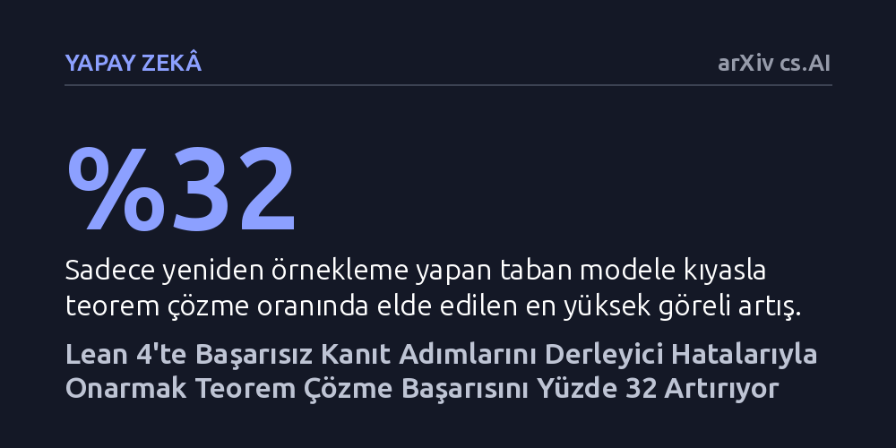

YAPAY-ZEKA · arXiv cs.AI · 2026-10-22
Araştırmacılar, Lean 4 teorem kanıtlayıcısında dil modellerinin başarısız kanıt adımlarını derleyici hatalarıyla onarmasını sağlayan bir yöntem geliştirdi. Bu onarım mekanizması, modellerin teorem çözme başarısını yüzde 32'ye kadar artırdı ve fazladan 82 teorem çözdü.
Yapay zekanın mantıksal akıl yürütmede hata yaptığında her şeye baştan başlamak yerine, derleyiciden aldığı geri bildirimle hatasını adım adım düzeltebileceğini gösteriyor.

Büyük dil modelleri matematiksel teoremleri kanıtlarken adımları teker teker kurgular. Ancak Lean 4 gibi biçimsel kanıt asistanları, insan denetimine ihtiyaç duymadan her adımı anında inceler ve yanlış bir hamle yapıldığında bu adımı kesin bir hata mesajıyla reddeder. Klasik yaklaşımda yapay zeka bu zengin hata mesajını tamamen göz ardı eder; başarısız olan adımı çöpe atıp yerine şansını yeni baştan deneyerek farklı bir aday üretir.
Bu durum, satranç oynarken yaptığı kural dışı bir hamlenin neden geçersiz olduğunu hakemden duyan ama bunu dinlemek yerine gözünü kapatıp tahtaya rastgele başka bir taş sürmeye benzer. Matematiksel kanıtlar tek bir yanlış adımla bile tamamen tıkanabildiği için, hata mesajlarını dikkate almayan bu rastgele deneme-yanılma süreci muazzam bir hesaplama gücünü ve zamanı heba eder. Araştırmacılar, bu hatayı çöpe atmak yerine doğrudan derleyici mesajına bakarak yerinde tamir etmenin mümkün olup olmadığını araştırdı.
Araştırma ekibi, kanıt sürecini baştan başlatmak yerine her aşamada üretilen adımları denetleyen ve onaran çevrim içi bir onarım modülü tasarladı. Kanıtın her adımında yapay zeka modelinden K adet taktik adayı üretmesi istendi. Eğer üretilen taktik adımı Lean derleyicisi tarafından reddedilirse, bu adım hemen terk edilmedi; derleyicinin ürettiği açık hata mesajı önceden eğitilmiş bir onarım modeline girdi olarak verildi.
Sistem, reddedilen her hatalı adımı en fazla R kez olacak şekilde sınırlandırılmış bir döngüde yerinde onarmaya çalıştı. Bu deneyler, biçimsel matematik alanında standart kıyaslama aracı olan LeanDojo veri kümesinden seçilen 1.990 teorem üzerinde ve ayrıca Lean Workbook veri kümesinde sınandı. Farklı aday bütçeleri altında yapılan testler, onarım modülünün yalnızca rastgele örneklemeye dayanan geleneksel yönteme karşı ne kadar başarım sağladığını ölçtü.
Elde edilen bulgular, hata mesajlarıyla yerinde onarım yapmanın teorem çözme başarısını tutarlı biçimde artırdığını gösterdi. İncelenen tüm aday bütçelerinde onarım modülü klasik örnekleme yöntemini geride bıraktı; LeanDojo üzerinde bağıl olarak yüzde 32'ye varan bir başarı artışı sağlandı ve modeller daha önce çözemediği 82 ek teoremi kanıtlamayı başardı. Üstelik bu kazanım Lean Workbook testlerinde de tekrarlandı ve önceki çözümleri bozmadan başarı oranını neredeyse ikiye katladı.
Bununla birlikte, onarım mekanizması bedava bir kazanç sunmuyor; ek teorem çözebilmek için fazladan işlem süresi harcanması gerekiyor. Ancak bu takas oldukça öngörülebilir bir seyir izliyor: Onarım mekanizması en büyük faydayı örnekleme bütçesinin kısıtlı olduğu anlarda veriyor ve toplam başarım kazancının yüzde 84 ila 96 gibi ezici bir kısmı daha ilk onarım denemesinde elde ediliyor. Ayrıca yapılan ayrıntılı incelemeler, modelin tip uyuşmazlığı gibi derin mantıksal ve yapısal hatalardan ziyade, çoğunlukla yüzeysel taktik çalıştırma hatalarını düzeltebildiğini ortaya koydu.
Bu çalışma, yapay zekanın sadece daha fazla tahmin yürüterek değil, sistemden aldığı kesin ve kurallı geri bildirimleri dinleyerek daha verimli çalışabileceğini somutlaştırıyor. Derleyicilerin sunduğu hata mesajları, modellerin karmaşık mantık yürütme süreçlerinde nerede tökezlediğini gösteren birer pusula işlevi görebilir. Böylece körü körüne yeniden denemek yerine hedefe yönelik küçük düzeltmeler yapmak hesaplama maliyetini düşürme potansiyeli taşır.
Yine de yöntemin sınırlarını doğru değerlendirmek gerekir. İlk denemeden sonraki onarım adımlarının hızla azalan getiriye sahip olması ve modelin derin mantıksal çelişkileri çözememesi, yapay zekanın henüz biçimsel akıl yürütmede insana özgü derin yapısal düzeltmeleri tam olarak kavrayamadığını gösteriyor. Gelecekte bu tür derleyici güdümlü onarım döngülerinin geliştirilmesi, yapay zekanın doğrulanabilir bilimsel ve matematiksel araştırmalardaki güvenilirliğini artırmada kritik bir eşik olacaktır.